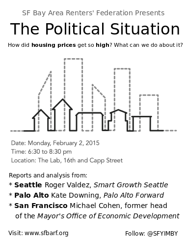

SFBARF are people who believe SF's housing crisis can be mitigated by increasing the housing supply. We organize renters to testify in favor of new building projects at neighborhood meetings and hearings.
Our mailing list is on Google Groups so you can read the archives. The email traffic is modest and you can elect to receive individual mails or a digest.
Please come to our first panel discussion

When: Monday, February 2nd. 6:30pm to 8:30 pm
Where: The Lab, 2948 16th Street (16th and Capp Streets)
Facebook event,
Twitter (for RTs),
Meetup event,
Eventbrite (You do not need tickets, I made an Eventbrite because some people like it.),
G+
The cause of our current housing shortage isn't technological - we know how to build. It's not financial - investors are clamouring to invest in the Bay Area. It's not the result of a raw material shortage - unlike the 1940-45 housing crisis when the war effort diverted labor and materials from private efforts, today we have all the laborers and materials we need.
The cause of our current shortage is 100% political.
We have the great fortune to be able to host three expert panelists. They will talk to us about the political landscape with respect to housing in their respective cities:
If the cause of the shortage is political, so too must be the solution: the goal of the SF Bay Area Renters' Federation is to organize renters (and allies) to agitate for increasing the supply of housing in San Francisco, Oakland and the Bay Area.
I'm really excited to be holding this event. It will be our first big social event! Please forward this invitation to all of your friends.
Love, Sonja
Oct 2, 2014
As it turns out, everybody reads The Examiner.
June 11, 2014
Oakland Planning Commission- WOSP
You have to click through to video. SFBARF speakers start at 1h 48 minutes, but there are a couple of great speeches starting at 1 hour 26 minutes. Highly recommended.
June 5, 2014
Planning Commission; 2051 - 3rd Street aka 650 Illinois St.
May 7, 2014
Board of Appeals; 2051 - 3rd Street aka 650 Illinois St. Supporting the ISSUANCE of Tree Removal Permit
May 1st, 2014
SF Planning Commission Video of full hearing
Micah and Carey talking about 650 Indiana St (item 13)
Sonja and Micah talking about 1201-1225 Tennesee St (item 14)